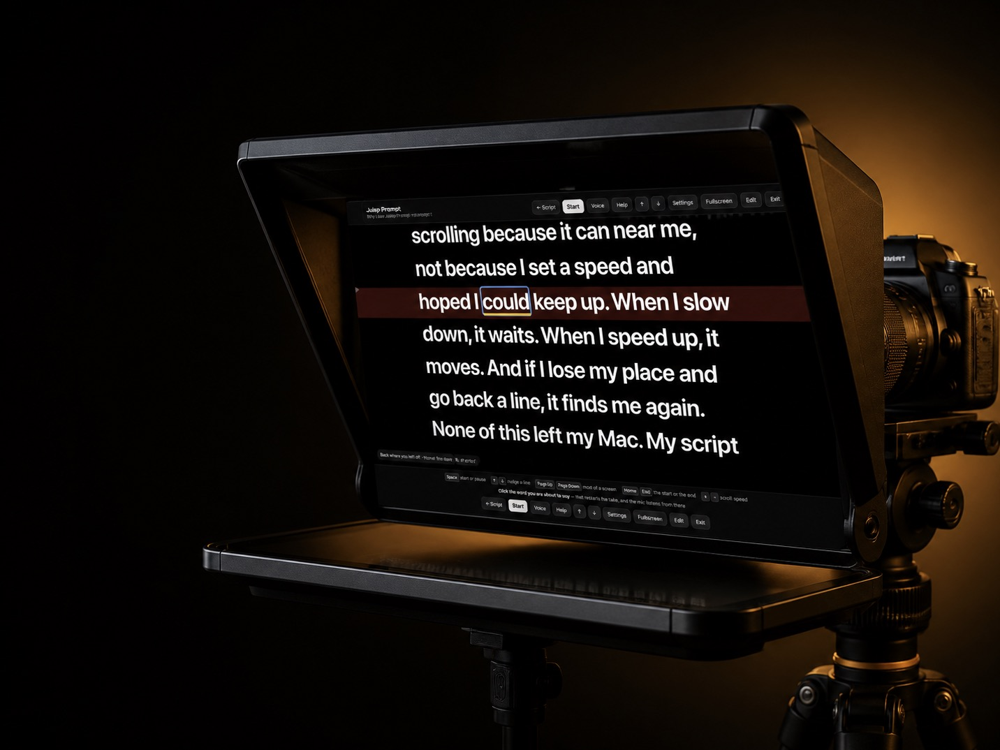
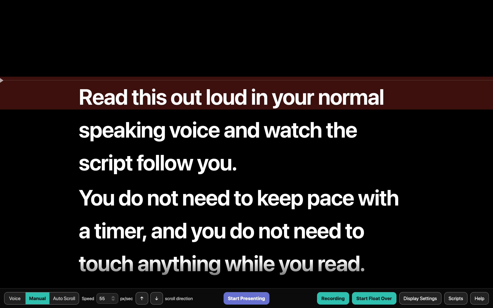

It follows where you go.
No timer to guess at, no speed dial to nudge. Start speaking and the words come to you. Pause, and it waits. Wander off-script and it picks you back up when you return.
Voice-following teleprompter for Mac
TalkOver listens while you read and moves the script to match you. Pause to think and it waits. Go back over a line and it goes back with you. Prefer a steady scroll, or to drive it yourself? It's got it all.
Float Over mode allows you to read a script while on a conference call. And you can record with your mic and camera.
Buy it once, use it forever. No subscription. Nothing you say leaves your Mac.
30 days free · Apple Silicon Mac · One-time purchase

No timer to guess at, no speed dial to nudge. Start speaking and the words come to you. Pause, and it waits. Wander off-script and it picks you back up when you return.
Switch mid-take between voice-following, a steady timed crawl, or driving it yourself with the arrow keys.
Float Over drops a transparent script over Zoom, Meet, Teams, Keynote, or your browser. Clicks pass straight through to the app behind it. The script is hidden from recordings and presentations, so the people on the call see your slides and not your words.
Record your camera and microphone while you read, so you're looking at the lens and not on your notes. Good for tutorials, demos, and updates. The recordings are saved straight to your Mac, ready to share or to edit.
Everything included
The presenter view

This is the teleprompter app we've always wanted. Simple. Powerful. Inexpensive. Yours for life, with no subscriptions or upgrade-required features.
Get TalkOver
Before you ask
TalkOver stops prompting. Nothing is deleted and your scripts stay exactly where they were on your Mac.
Voice-following understands English. Timed and manual scrolling work with a script in any language.
No. Speech recognition runs on your Mac. It works with the Wi-Fi off.
Apple Silicon only — M1 or later, macOS 11+. Intel Macs aren't supported.
About
We built TalkOver because the online tools that follow your voice charge a monthly fee and send your audio to the cloud. This one runs on your Mac, costs once, and is yours for good.
Read the full story →